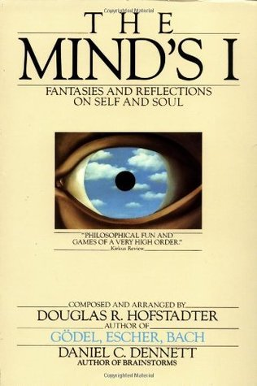
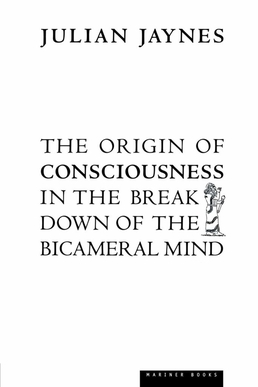
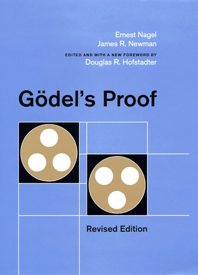

Favorite Works
Books, papers, and anything else I've found inspiring.
Books

The Mind's I
Douglas Hofstadter and Daniel Dennett
The Prophet
Kahlil Gibran

The Origin of Consciousness in the Breakdown of the Bicameral Mind
Julian Jaynes

The Stranger
Albert Camus

Gödel's Proof
Ernest Nagel and James R. Newman
Cat's Cradle (Mud Poem)
Kurt Vonnegut Jr.
Papers & Essays
- DreamCoder, Kevin Ellis et al.
- Neural Networks Are Already Clean, Nick Cammarata